|
so when we finally got there the mini was wet. we didn't get to sebs until quite late and then no one would decide where to go so we sat about for a bit. apparently since it's my car then we just do whatever i want, so i get to make all the decisions. that sounds ok to me. any way my car overheated and we had to fiddle with the radiator to make it work. where
was i? oh yes, the mini was old and has big holes in. it was wet too and
was fenced off so you had to climb that to get in. there was a nice hip
which was too wet to ride, so we just did a few little bits on it here and
there. below: the hole - no decking, seb and the fence. 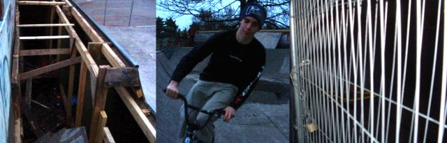 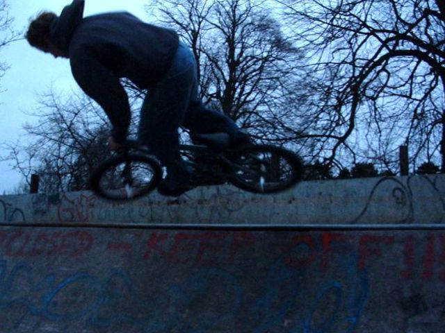 so to start us off a nice picture of tim airing, followed by one of me airing. becky took all these pictures. i can't stress that enough. she suffered in the cold conditions but hasn't she done well kids. below there are some more of me airing sort of and an xup attempt. i meant to just do a turnbar anyway... 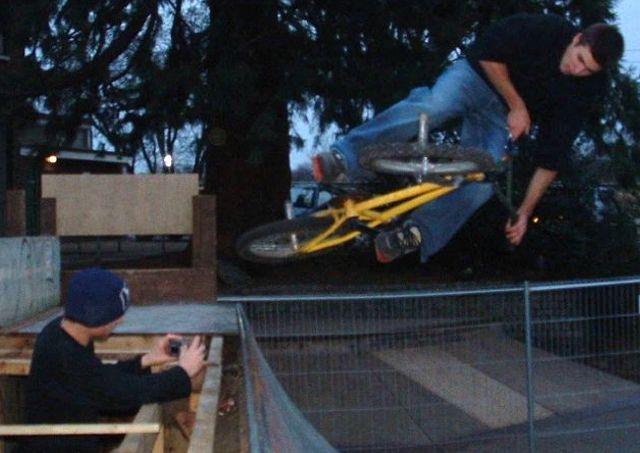 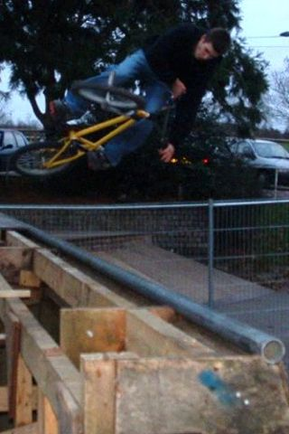 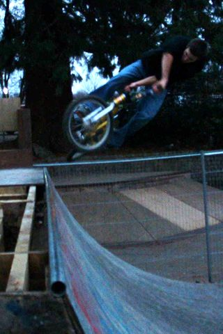 well well well what have we here. it's seb wearing tims hat. this is sebs new bike. it's green now to match his shoes. colour co-ordination is in. 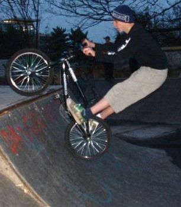 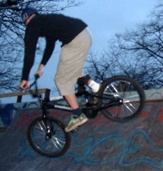 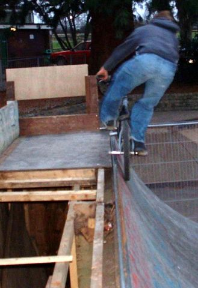 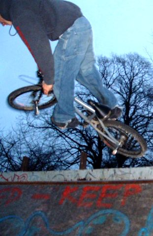 some different things to try at a mini, by tim. 1. peg stall - much harder than it looks. we can't do them. 2. airing high. can't do this yet either but getting there slowly. 3. trying to 180, 270 or 360 out. hard to land nicely. 4. that trick where you land on you back wheel and hop back in. i can't do these but tim can and they look fun. is it a fufanu? 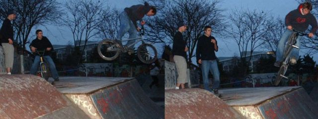 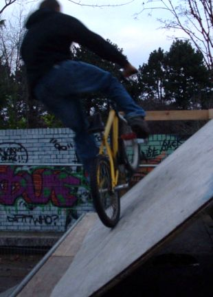 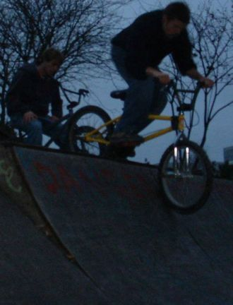 here are some of my tricks. 1. wall ride. this was fun but then the skaters came and got in the way so we couldn't use it. 2. diaster. fun and not too hard. next time try barspin disaster. better learn barspins first. from here on it started to get dark and the pictures get blurrier, so i
can't be bothered to do captions. at the very bottom are some pictures of
seb's house and seb's dad. thanks for having us. his house is nice. 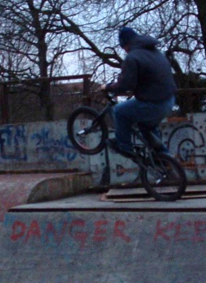 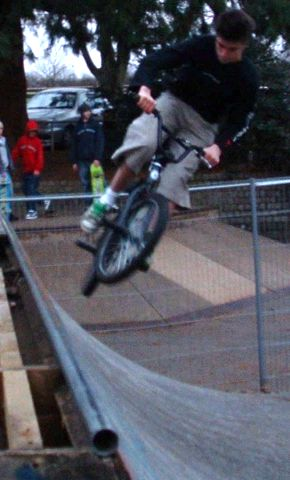 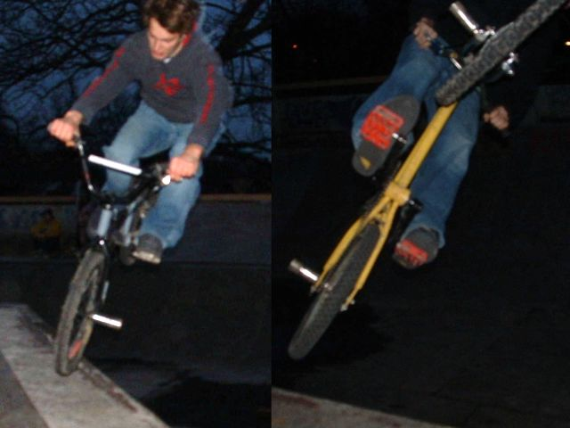 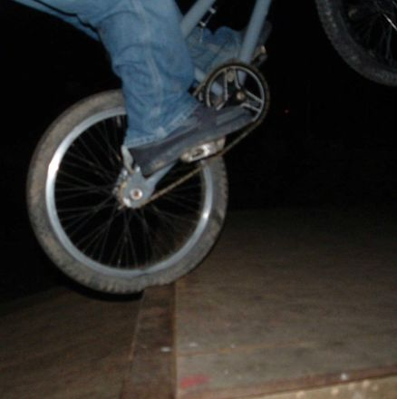 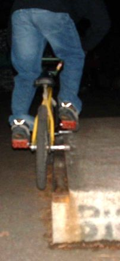 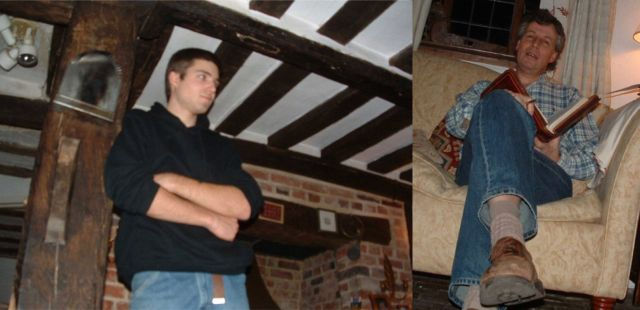 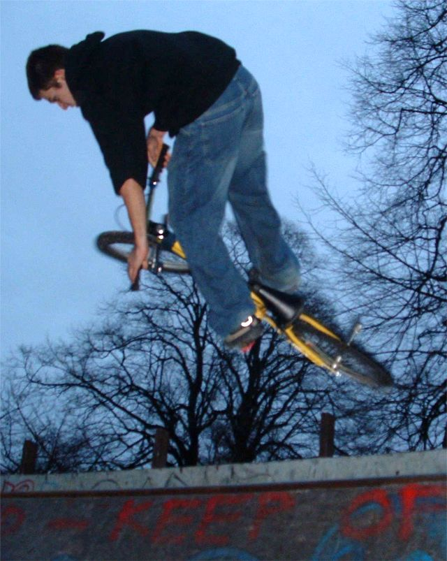 |